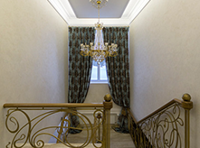

Роскошный бархат цвета марсала с вкючениями голубого и сереневого цветов с золотисто-серебристым принтом. Возможно применение в шторах, мякгой обивки мебели, покрывало на кровати, диванные подушки. При желании шторы могут быть декорированы бахрамой и кистями.
Татьяна,г. Екатеринбург
Роскошный бархат цвета марсала с вкючениями голубого и сереневого цветов с золотисто-серебристым принтом. Возможно применение в шторах, мякгой обивки мебели, покрывало на кровати, диванные подушки. При желании шторы могут быть декорированы бахрамой и кистями.
Татьяна,г. Екатеринбург
Роскошный бархат цвета марсала с вкючениями голубого и сереневого цветов с золотисто-серебристым принтом. Возможно применение в шторах, мякгой обивки мебели, покрывало на кровати, диванные подушки. При желании шторы могут быть декорированы бахрамой и кистями.
готовая
штора на заказ

Создайте свою штору на заказ с помощью нашего конструктора. Вы точно будете знать что такой шторы ни у кого нет, потому что вы создаете уникальную штору только для вас.
Роскошный бархат цвета марсала с вкючениями голубого и сереневого цветов с золотисто-серебристым принтом. Возможно применение в шторах, мякгой обивки мебели, покрывало на кровати, диванные подушки. При желании шторы могут быть декорированы бахрамой и кистями. Применив бархат, шелка и велюры,Вы получите идеальный облик интерьера . Текстиль - это финальный штрих в создании уютного дома, который может быть роскошным, благородным, праздничным и удивительным. Бархат с ажурным цветочным орнаментом цвета слоновой кости и мокрого асфальта, обрамленный роскошным дамаском и тиснением цвета шампань и жемчужно-серым. Его поверхность покрыта плотным ворсом. Возможно применение в шторах, мякгой обивки мебели, покрывало на кровати, диванные подушки. При желании шторы могут быть декорированы бахрамой и кистями. Применив бархат, шелка и велюры, Вы получите идеальный облик интерьера. Текстиль - это финальный штрих в создании уютного дома, который может быть роскошным, благородным, праздничным и удивительным. Роскошный бархат цвета марсала с вкючениями голубого и сереневого цветов с золотисто-серебристым принтом. Возможно применение в шторах, мякгой обивки мебели, покрывало на кровати, диванные подушки. При желании шторы могут быть декорированы бахрамой и кистями. Применив бархат, шелка и велюры, Вы получите идеальный облик интерьера. Текстиль - это финальный штрих в создании уютного дома, который может быть роскошным, благородным, праздничным и удивительным. Бархат с ажурным цветочным орнаментом цвета слоновой кости и мокрого асфальта, обрамленный роскошным дамаском и тиснением цвета шампань и жемчужно-серым. Его поверхность покрыта плотным ворсом. Возможно применение в шторах, мякгой обивки мебели, покрывало на кровати, диванные
{kind=link}
{kind=link}